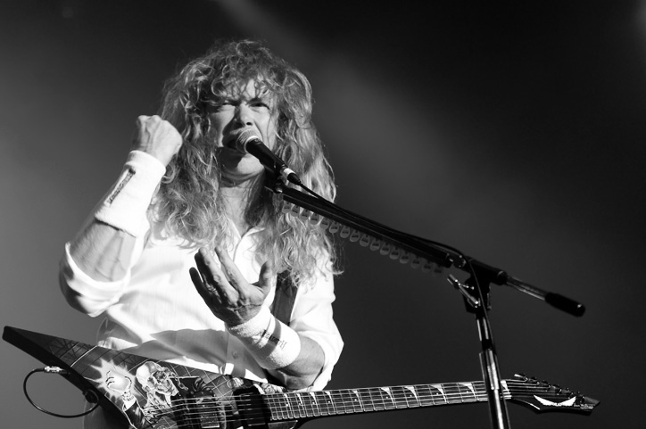
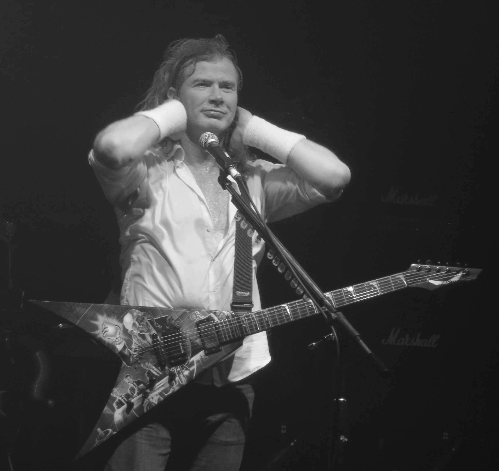
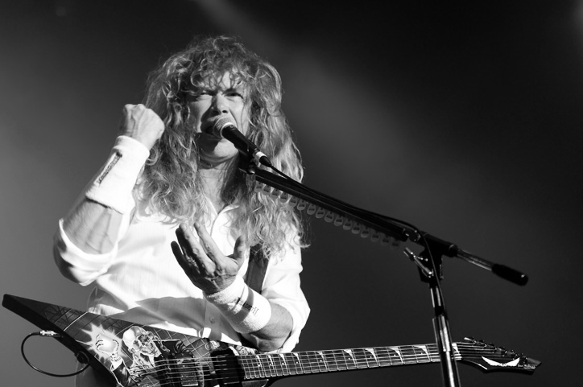
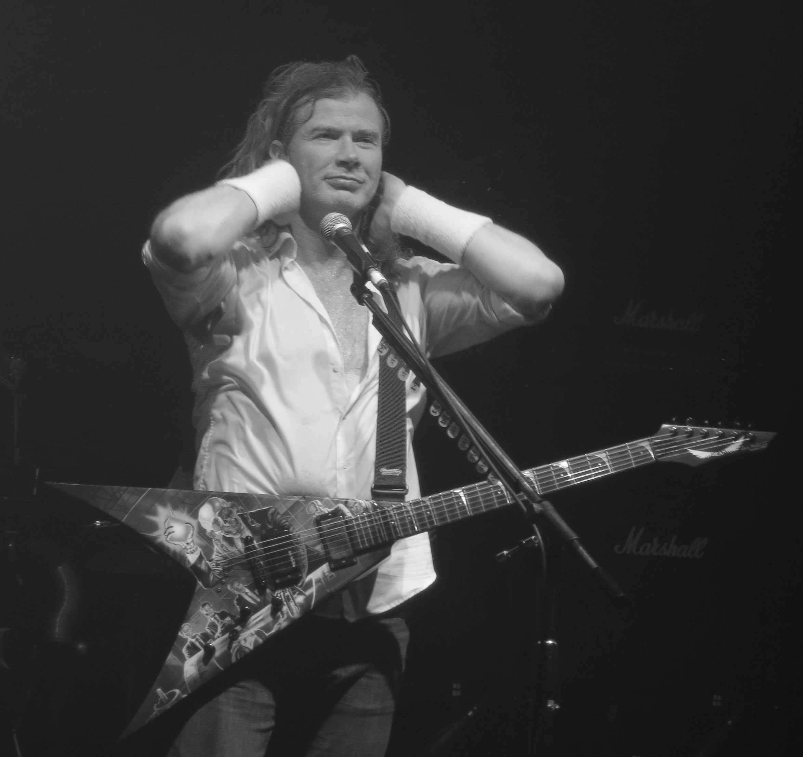
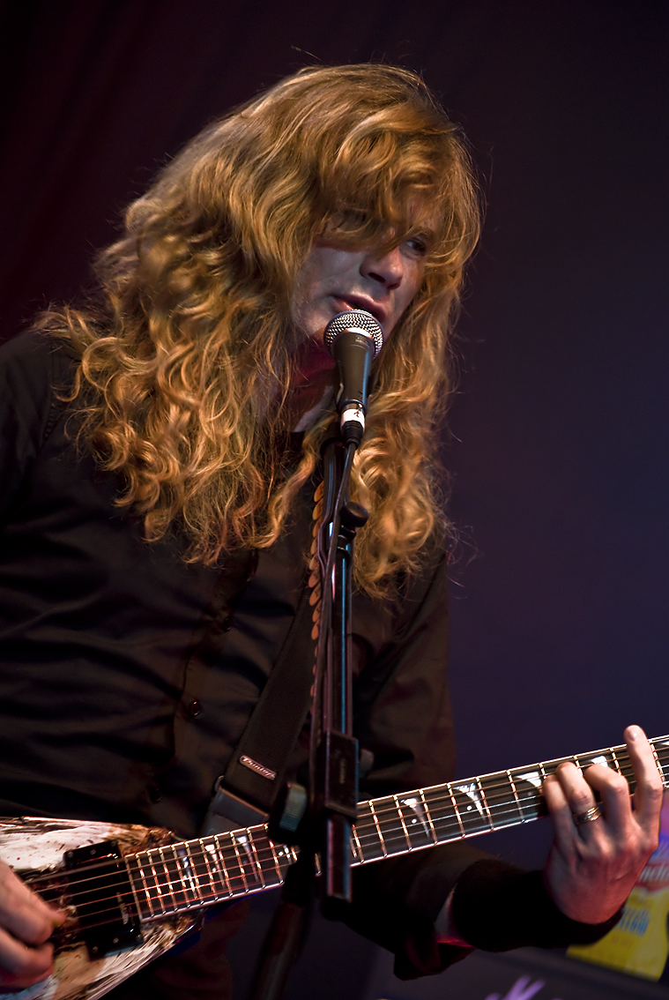

The Dave Mustard Conspiracy
Since their formation in 1983, Megadeth's Dave Mustaine has become an icon alongside James Hetfield, Kirk Hammett, Kerry King, Jeff Hanneman, Scott Ian, and other famous heavy metal guitarists.
One prominent feature of Mustaine is his rich, vibrant strawberry blonde hair. However, over the years, that color has very noticeably begun to fade to a dull gray.
Haven't you seen it? Look at these very real and not digitally altered photographs :
 



However, you may be wondering: Despite these undeniable photographs, how does he continue to appear with the rich, vibrant hair he once had? The answer is simple: mustard .
Mustaine has opted to put mustard in his hair to keep up the facade, earning him the nickname 'Dave Mustard' among our fellow conspiracists.
In fact, he even keeps a bottle of mustard near him at all times to ensure that his hair does not fade to a dull gray during a public appearance!
Haven't you seen it? Look at these very real and not digitally altered photographs :



With this concrete evidence on the table, there is nothing Mustaine can say or do to further deny the truth. His hair has long lost its rich, vibrant strawberry blonde color, and he has attempted to cover it up by putting mustard in it, but our fellow conspiracists know the truth, and we will not allow him to hide from it any longer!
The truth is here! Long live the Dave Mustard Conspiracy!
- The Dave Mustard Conspiracy Group
Add a comment
Attach a file
MustardMan99
i always thought it was weird how his hair would change color from show to show, now it all makes sense
DaveyDijon88
i knew something was off when i saw his hair gray one day and back to normal the next, mustard must be the secret ingredient
HairyMustard23
i caught a glimpse of him backstage and i swear i saw a bottle of mustard, i think we’re onto something here
MustardMystery77
honestly it explains a lot, i’ve seen him look like a different person from one concert to the next
GoldenMustard3
i thought it was just hair dye, but mustard? now that’s a plot twist i didn’t see coming
MustardMaverick42
i was skeptical at first, but the evidence is undeniable, mustard is the key
StraberryBlonde51
i’ve been saying this for years, there’s no way those hair colors are natural, mustard conspiracy confirmed
MustardWhisperer46
if i had a dollar for every time i saw his hair look different, i’d be rich, mustard must be his secret weapon
EcuadorMan29
hey guys, this is unrelated, but check out this cool song i made
DaveyHairTonic12
the way his hair glistens on stage makes total sense now, mustard shine
MustardGuru89
i can’t unsee it now, i’ll never look at his hair the same way again
DogeMustard63
i asked for his autograph, and he signed it with mustard! :0
squidcase
wtf
© 2025 The Dave Mustard Conspiracy Group. All rights reserved.